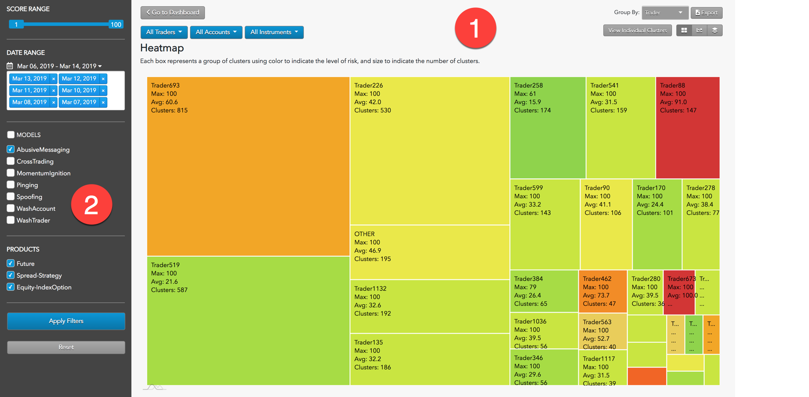
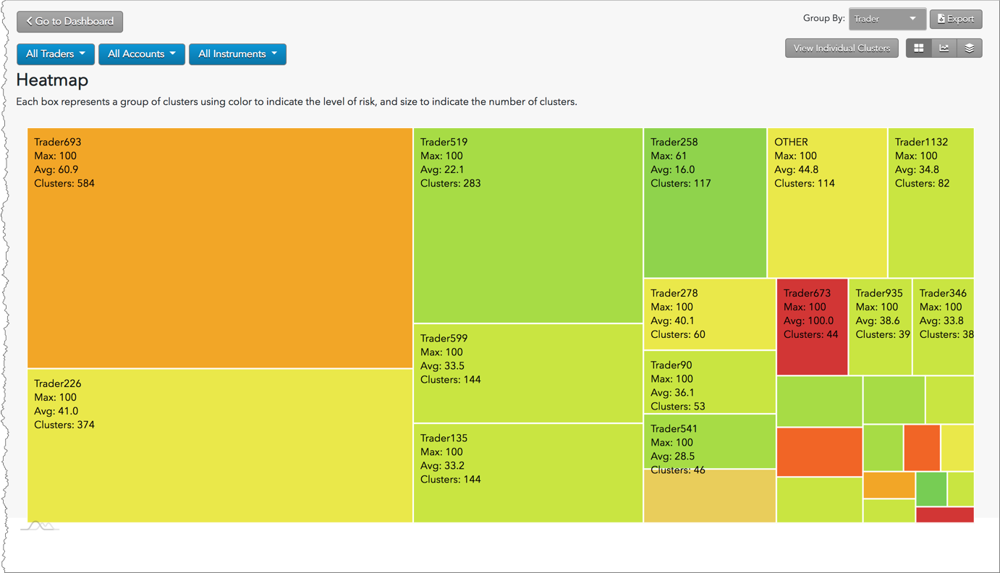
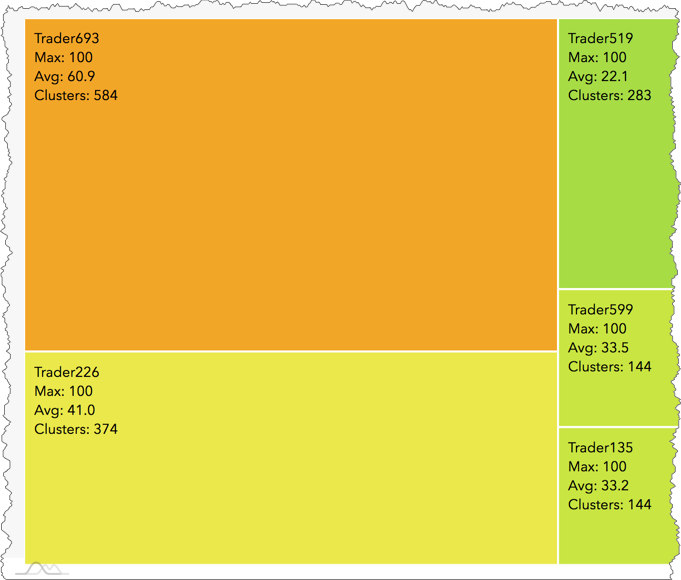
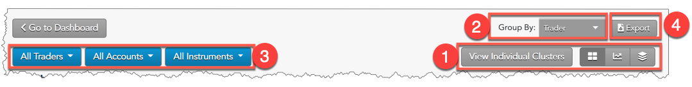

The Heat Map shows you which traders or accounts are generating activity that has a high degree of similarity to regulatory cases. Each rectangle represents a group of clusters using color to indicate the level of risk, and size to indicate the number of clusters. These visual cues help you prioritize your cluster group review
based on activity that generates the most risk.
Heat Map display

The Heat Map display is organized into the following sections:
- Heat Map: Displays the Heat Map view of the selected data as well as filtering and navigation tools.
- Data Selection Panel: Manages the dates available to TT Score and specifies the criteria to use when populating the list.
Interpreting the Heat Map
The Heat Map groups clusters by trader, instrument, or account, and displays these groups as a collection of blocks. TT Score calculates a risk score for each block based on the clusters in the group represented by that block.

- The color of a block indicates the severity of the score. Low scores are represented as light green and high scores are represented as red.
- The size of a block indicates the number of clusters.

- Metrics for the clusters in each groups are displayed within the block:
- Trader, Account, or Instrument ID: Shows the ID based on the "Group By" setting
- Max: Highest cluster score
- Avg: Average score of clusters within the group
- Clusters: Total number of clusters within the group
Heat Map navigation and filters

-
Select View: Switch between Individual Clusters, Heat Map, Outlier Chart, and Daily Cluster Groups views.
-
Group By: Sort the view by trader, account, and instrument.
-
Cluster Filters: Filter the view by trader, account, and instrument.
-
Export: Exports filtered data into a .csv spreadsheet file.
Data Selection Panel
{% include content/data-selection-panel.html %}